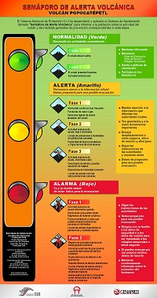
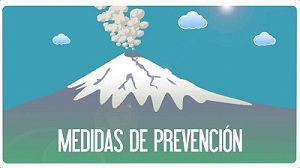

Consejos de seguridad:
Mantente alejado de volcanes activos.
Si vives cerca de un volcán activo, prepara un kit de emergencia que incluya gafas de seguridad, una máscara, una linterna y una radio en buen estado que funcione con pilas.
Elabora una ruta de evacuación y ten el depósito de gasolina del coche siempre lleno. 
Evacua siguiendo las recomendaciones de las autoridades para no encontrarte lava y barro, así como rocas y escombros que puede arrojar el volcán.
Evita zonas de ríos y regiones bajas.
Antes de abandonar tu casa, ponte una camisa de manga larga y pantalones largos; usa gafas de seguridad o normales, sin lentillas. Ponte una máscara de emergencia o envuélvete la cara con un paño húmedo.
Si no vas a evacuar, cierra puertas y ventanas, y otros puntos de ventilación para evitar que la ceniza entre en la casa.
Ten en cuenta que la ceniza puede sobrecargar el tejado y puedes necesitar retirarla. Durante la limpieza, lleva elementos de protección

La ceniza puede dañar motores y piezas metálicas, así que evita conducir. Si debes conducir, no superes los 55 kilómetros por hora.